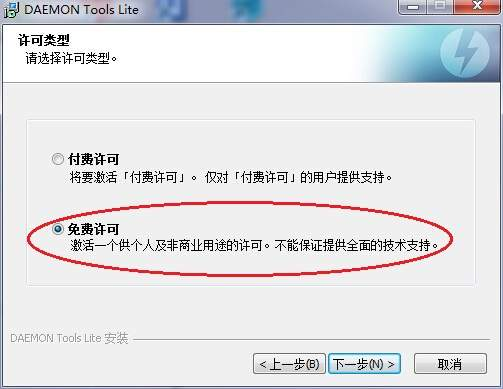
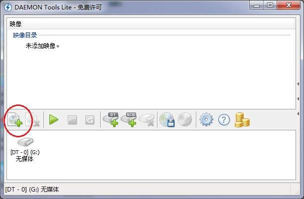
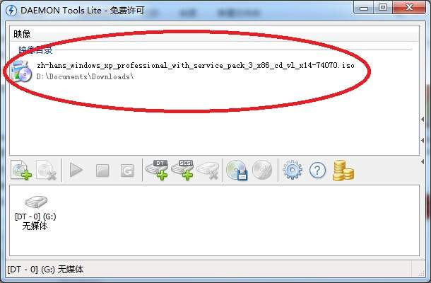
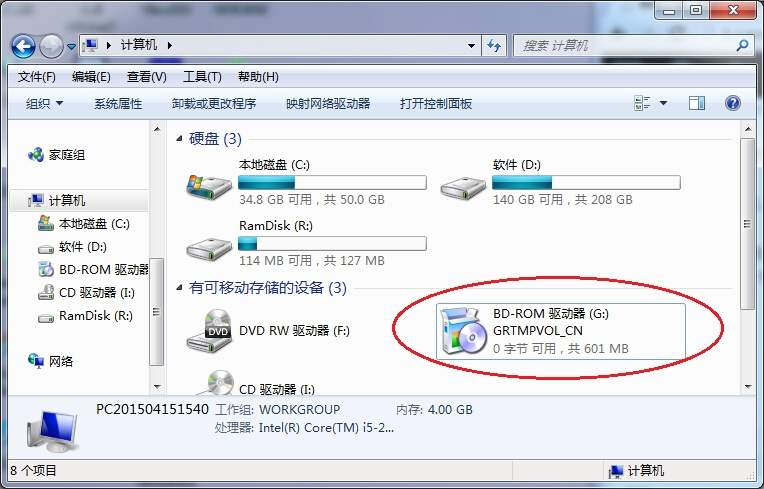
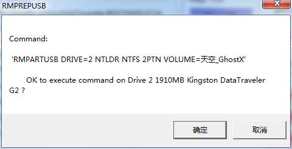
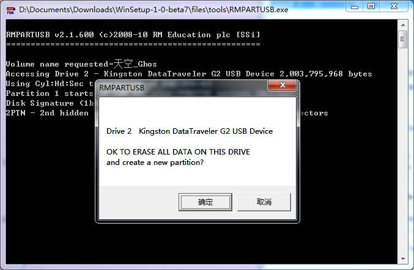
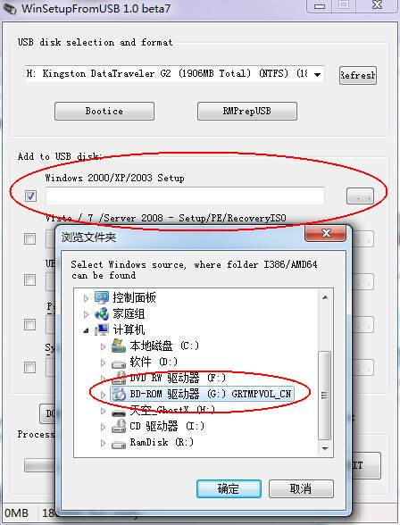
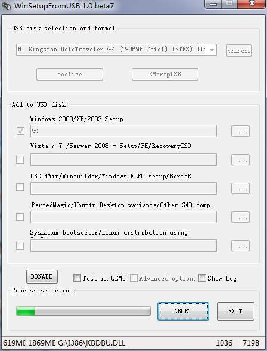

给我的小电脑（IBM ThinkPad X40，也就是ThinkPad还在IBM手中时的最后一个设计版）安装操作系统真是一个头疼的事情。因为X40没有光驱，所以不能使用光盘安装。这个容易啊，可以使用U盘。然而诡异的是，BIOS可以选择从U盘启动，并且能够把相应的安装程序加载到内存中运行，但是，安装程序却提示找不到安装所需要的文件，甚至找不到U盘。
这个现象不仅仅是在为X40安装Windows XP时才会遇到，在为X40安装CentOS时同样会遇到。好在CentOS的安装可以选择网络安装，也就是说，在安装程序启动之后，选择使用ftp下载所需的资源文件，于是，原本624MB的、可以离线安装的ISO光盘镜像（CentOS-5.11-i386-bin-1of8.iso），硬生生退化成了只有13.5MB、网络安装版的ISO（CentOS-5.11-i386-netinstall.iso）。但至少能装！
可是Windows XP就没有网络安装这回事了。所以，当我把小电脑从自带的XP装成CentOS时，我是做好了再也不能使用XP的决定的。。。
然而，最近我却又需要在X40上运行XP了。好吧，只要在这种逼迫下，才能迫使我好好研究一下怎么用U盘给X40安装XP。
这途中各种艰辛就不说了，说了全是泪。直接说怎么弄吧。最重要的是一个叫做WinSetupFromUSB的工具。
一、下载虚拟光驱软件DTLite4491-0356.1394761051.exe（居然被认为是盗版，百度你也是够了，大家自己去下载吧），然后安装。这个没有任何难度，只是在选择许可类型时要记得选“免费许可”：

二、下载Windows XP的原装镜像zh-hans_windows_xp_professional_with_service_pack_3_x86_cd_vl_x14-74070.iso（居然被认为是盗版，百度你也是够了，大家自己去下载吧，任何ISO都可以的）
三、用DAEMON加载Windows XP的镜像，成为一个虚拟光驱：
(1)点击“加载”，选择XP的ISO镜像后，就会多出一个条目：


点击之，然后点击“载入”按钮，即可把ISO文件挂载成为一个光驱。此时，应该能够在资源管理器中看到这个光驱：


四、下载U盘启动盘制作工具WinSetupFromUSB，WinSetupFromUSB_1-0-beta7.exe，这是一个绿色软件，不需要安装，双击即可运行。界面如下：

五、插入U后，点击WinSetupFromUSB中的Refresh，即可找到这个U盘：

六、点击按钮RMPrepUSB，进入U盘引导方式配置界面：

七、在BootOption栏目中选择XP/BartPE bootable[NTLDR]。在4FILESYSTEM and OVERRIDES中选择NTFS和BOOT as HDD，然后点击6按钮Prepare Drive：

八、会出现两次确认对话框，都点击确定即可：


九、配置好U盘之后，即可关闭配置界面了。
十、回到WinSetupFromUSB主界面，选中Windows 2000/XP/2003 Setup，指定DAEMON创造的、加载了XP镜像的虚拟光驱（我这里是G盘）：

十一、点击按钮GO，即可把XP镜像写入U盘了。可能需要等待10分钟：

至此，装有Win XP的U盘安装盘制作完了。至于开机选择U盘启动，然后安装XP的过程，不需要我废话了吧~~